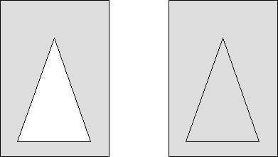

To draw the current path and fill its interior using the current pattern symbol, use GpiFillPath. The path is deleted after the interior is filled. The boundary lines are considered part of the path interior and are drawn with this function. Any open figures in the path definition are closed automatically by GpiFillPath.
This function accepts the path identifier (which must be 1) as input, and either of two construction options:
Paths, like area primitives, can be filled in alternate mode or winding mode. If the path consists of multiple, intersecting figures, the path-fill mode affects the final appearance of the path.
The following figure shows two identical paths that were filled, each using one of the two modes. Each path consists of a triangle drawn within a rectangle. The path on the left was filled using the alternate mode. The path on the right was filled using the winding mode.

Alternate and Winding Fill Modes